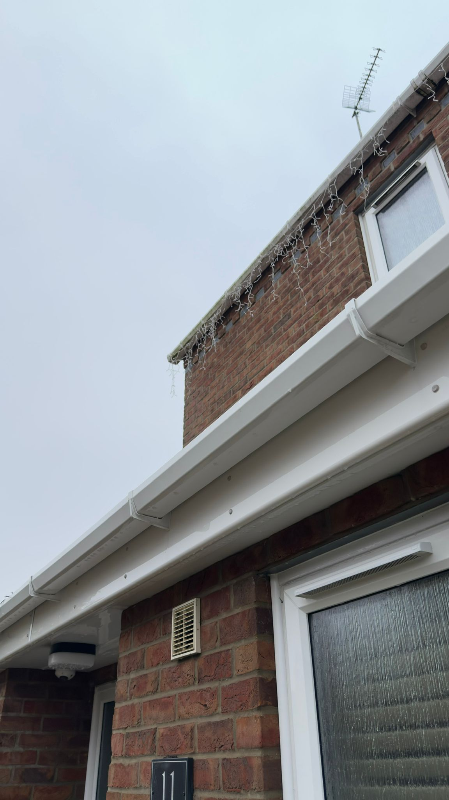
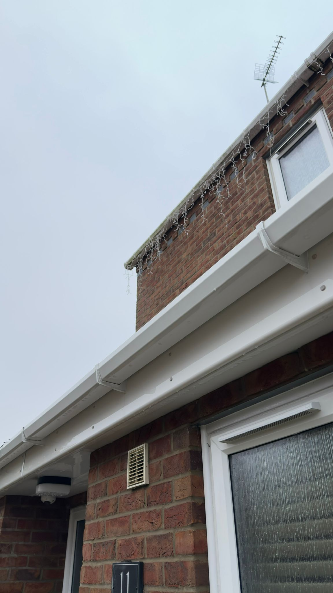

Gutter Cleaning
Professional gutter cleaning to remove leaves, debris, and blockages, protecting your home from water damage.
Learn moreExpert professional gutter cleaning, fascia washing & soffit care across Lowestoft, Oulton Broad, Great Yarmouth & Norfolk. We remove debris, unblock gutters & protect your home from costly water damage. Free quotes • 5-star reviews • Fully insured
Oliver Exteriors provides professional gutter cleaning services throughout Lowestoft, Oulton Broad, Great Yarmouth, and surrounding Norfolk & Suffolk areas. Our experienced team clears blocked gutters, removes debris, and protects your home from water damage that can lead to costly repairs.
Professional gutter cleaning removes leaves, debris, moss, and blockages from your gutters and downpipes. Over time, gutters accumulate dirt and organic matter that prevent water flowing freely. This causes water to overflow, leading to foundation damage, basement flooding, and structural problems. Our specialist equipment and techniques thoroughly clean gutters from top to bottom, restoring proper water drainage and protecting your home's structural integrity.
Blocked gutters cause water to pool on your roof and overflow down walls. This leads to foundation cracks, water infiltration, and expensive structural repairs. Regular professional cleaning prevents these problems before they start.
Dirty, stained gutters and fascias detract from your home's appearance. Clean gutters instantly improve your property's curb appeal, making a great first impression and increasing property value.
Preventive gutter maintenance costs a fraction of repairing water damage. Regular cleaning extends the life of your gutters, fascias, and roof, protecting your investment.
With years of experience serving Lowestoft, Oulton Broad, and surrounding areas, we're the trusted choice for professional gutter cleaning and exterior maintenance.
We deliver professional-grade gutter cleaning using proven techniques and specialized equipment. Our customers trust us with their homes and reward us with 5-star reviews.
We carry full public liability insurance and use certified techniques to ensure your safety and property protection.
Professional quality at honest prices. Free quotes with no hidden charges. We offer excellent value for money.
We arrive on time, work efficiently, and clean up after ourselves. Your satisfaction is guaranteed.
Serving Lowestoft, Oulton Broad, Great Yarmouth, Norwich, Beccles, Gorleston, and all surrounding areas in Norfolk & Suffolk.
Real results from our recent gutter cleaning projects across Norfolk & Suffolk

Gutter cleaning and blockage removal completed in Gorleston, Norfolk


Gutter and fascia cleaning service carried out in Gorleston, Norfolk
Residential gutter cleaning completed in Loddon, Norfolk


Gutter cleaning service completed in Caister-on-Sea, Norfolk


Blocked gutters cleared in Gorleston, Norfolk

Gutter and fascia cleaning carried out in Lowestoft, Suffolk
 

Gutters and fascias washed in Caister-on-Sea, Norfolk


Cladding and fascia cleaning completed in Loddon, Norfolk
Gutter cleaning and blockage removal in Gorleston, Norfolk
Windows cleaned in Caister-on-Sea, Norfolk


Gutters & fascias washed in Worlingham, Suffolk


Gutters emptied in Kessingland, Suffolk
Gutters & fascias washed in Kessingland, Suffolk

Gutters & fascias washed in Kessingland, Suffolk


Gutters emptied in Worlingham, Suffolk

Patio pressure wash cleaning completed in Oulton Broad, Suffolk
See what our satisfied customers say about our expert gutter cleaning service
"Highly recommended Did a great job with the gutters and fascia’s today. Very friendly & hardworking and extremely reasonably priced."
"Harry did an amazing work. Despite the weather was not the best he was very fast, reliable and completed the work in a perfect way. Recommend!"
"Great service provided, did an excellent job with some dirty fascia and guttering and will be having the driveway and patio sorted in the new year!"
"A+ service- Harry did a fabulous job and worked hard to clean the years of dirt of our gutters. Would definitely recommend and will be my go-to person for future jobs!"
Common questions about our gutter cleaning service, pricing, and coverage areas.
Most properties benefit from gutter cleaning at least twice per year – in autumn after leaves fall, and in spring before the rainy season. Properties with overhanging trees or in coastal areas may need more frequent cleaning (every 3-4 months). We can recommend a schedule based on your specific property and surroundings.
Our pricing depends on your property size, gutter length, debris level, and access difficulty. We offer competitive rates with free, no-obligation quotes. Call 01502 819618 for a personalized estimate. Most residential properties range from £90-150, but we'll provide an exact price after assessment.
Yes! We service Lowestoft, Oulton Broad, Great Yarmouth, Norwich, Beccles, Gorleston, Caister-on-Sea, Kessingland, Worlingham, Loddon, and all surrounding areas throughout Norfolk and Suffolk. Call us to confirm coverage for your specific location.
Our comprehensive service includes: removal of leaves, debris, and moss from gutters; clearing of downpipes and drain pipes; flushing gutters to ensure proper water flow; safe disposal of all debris; and inspection for damage or needed repairs.
Yes, we carry full public liability insurance and all work is performed to certified safety standards. We use proper equipment, harnesses, and follow health & safety regulations to protect both our team and your property.
Yes! We also provide professional cleaning for solar panels, conservatories, windows, fascias, soffits, and other exterior surfaces. Contact us for a quote on any exterior cleaning needs.
We accept cash and bank transfer. Payment terms are flexible – pay on completion or arrange payment plans for larger projects.
Still have questions? We're here to help!
01502 819618
Email: info@oliverexteriors.co.uk